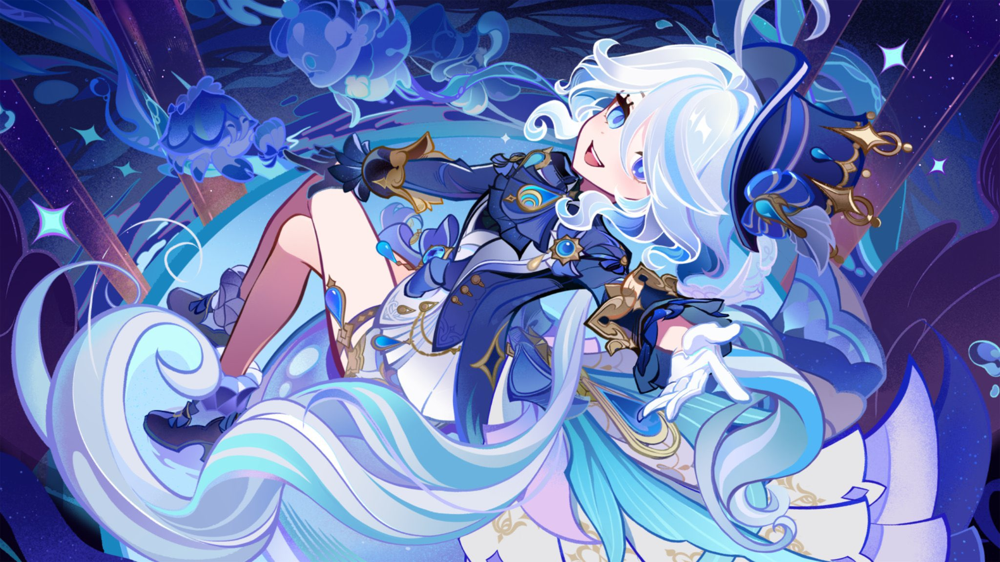

Hobby 1 = Genshin Impact
Embark on a journey through the enchanting world of Teyvat in Genshin Impact. Join forces with a diverse cast of characters, explore stunning landscapes, and uncover the mysteries of this open-world action RPG.
Embark on a journey through the enchanting world of Teyvat in Genshin Impact. Join forces with a diverse cast of characters, explore stunning landscapes, and uncover the mysteries of this open-world action RPG.
Immerse yourself in the beauty of nature with bird watching. Grab your binoculars, head outdoors, and enjoy observing various bird species in their natural habitats. It's a peaceful and rewarding hobby that connects you with the fascinating world of birds.
Dive into the delightful world of sweets, especially pudding. From classic custard puddings to unique flavors, discover the art of creating and savoring delicious desserts. Indulge your sweet tooth and explore the endless possibilities of sweet treats.
Immerse yourself in the intriguing world of Classroom of the Elite, an anime that explores the complexities of a prestigious high school. Follow the students of Class 2-C as they navigate academic challenges, social dynamics, and unexpected twists in this gripping psychological series.
Unwind and immerse yourself in the epic world of Xenoblade 3. Journey through vast landscapes, encounter unique characters, and engage in thrilling battles. Experience a captivating storyline and enjoy the serene beauty of this role-playing masterpiece.